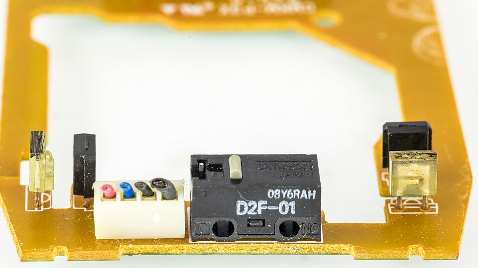

Find why a photoelectric sensor misses a carton
Build a simple light receiver, run a repeatable detection test and use the result to diagnose a packaging machine sensor.
Identify which way the light travels
An opposed or through-beam system puts the emitter and receiver on opposite sides of the path. A retroreflective unit puts both in one housing and uses a reflector opposite. A diffuse sensor depends on light reflected by the target. The object’s colour, surface, size, position and background can matter. Bright or shiny material can fool an unsuitable arrangement. Check the actual part’s mode, distance and output specification before adjusting. Omron’s industrial sensor guide · T18 · Sensor conversion and thresholds.

Photo by Lucasbosch, scaled with on-page callouts. Original photo · CC BY-SA 3.0.


Photo by Raimond Spekking, scaled with on-page callouts. Original photo · CC BY-SA 4.0.

Watch. Watch how a commercial Q5X sensor samples two conditions to choose a threshold. Compare it with your measured clear and blocked voltages. Banner Engineering’s two-point teach demonstration on YouTube.
Build a low-voltage receiver you can measure
Use a steady visible LED flashlight or a small approved LED source, a photoresistor, a 10 kΩ resistor, a 3 V battery holder, a multimeter and cardboard or tape for the fixture. A photoresistor is slow compared with a commercial photoelectric receiver. This bench work is a static or hand-speed comparison. It has no role in guarding or stopping machinery.
Wire +3 V → 10 kΩ → measurement node → photoresistor → battery negative. Measure the node to battery negative. In this layout, more light usually reduces the photoresistor’s resistance and lowers the reading.
Secure the light and the receiver across a short path. Sample three times with the beam clear and three times blocked by a plain opaque carton. Compare the ranges. If the clear readings are all below the blocked readings, choose a midpoint in that gap as your test threshold. Record what happens if ambient light or alignment changes without moving the target.
Try ten entries with each of a matte carton, shiny pack and transparent training item, then count how many cause a repeatable transition. A pass means exactly one blocked state and a return to clear before the next item. Add a paper tube around the receiver if stray light narrows the gap. Repeat under the same conditions and record clear, blocked, missed and false triggers.
In a diffuse tabletop variant, put source and receiver on the same side, separate them with a small opaque divider, and compare how much reflected light returns from different targets. A commercial unit may use modulated illumination, background suppression, polarisation, or teach settings. Learn the optics on the trainer and use the actual datasheet for a site job.
Find the first point where the count is wrong
| Observation at the machine or trainer | Discriminating next check |
|---|---|
| Receiver status flickers with path clear | Compare mounting alignment, contamination, stray light and baseline signal margin before changing the threshold. |
| Sensor output changes once per pass but the controller value never changes | Compare at the input and confirm PNP/NPN compatibility and input common, or verify the expected IO-Link bit and validity. |
| Input changes reliably and one carton is counted twice | Check edge logic, bounce or reflections, and the clear-to-blocked cycle before adjusting delay. Retest under normal product spacing. |
| Cardboard works while shiny packs fail | Check the optical mode and surface response. Prove the chosen reflector or polarised mode on the actual material. |
Review the output and signal logic in T34. Continue with the IO-Link sensor verification or compare physical stock movement in the label-printer lab.
Save one fixture photo, clear and blocked voltages, ten-trial counts for two materials and the measured effect of your one change.